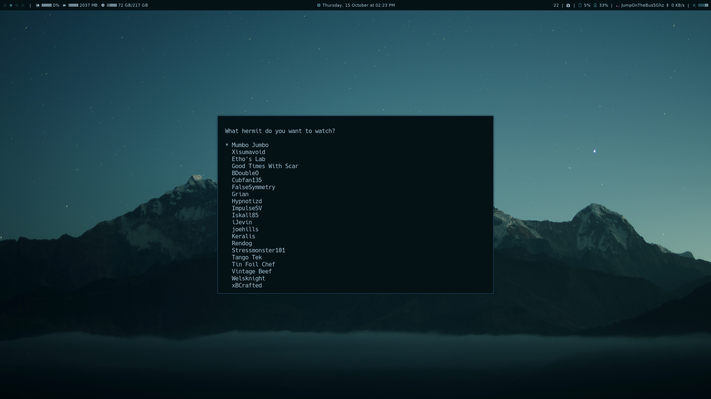

mikkelrask.github.io
Diverse små shell scripts
[link—standalone]
Jeg har på min github uploadet en masse små, meget specifikke, men alligevel (måske) brugbare scripts.
Det er i repoet der så fint er kaldet scripts at det hele foregår, og her vil jeg hurtigt gennemgå hvad de gør, og hvordan man kan gøre brug af dem.
Dette er i øvrigt ikke ment som en showcase af mine scripts som sådan, det mere ment som at vise hvor nemt man kan implementere ting, som, selvom de er lidt hacky, er på et så low level plan og så få linjer kode, at idéen er nem at kan adaptes eller omskrives til helt andre applikationer.
confirm (sh)
Dette lille bitte shell/dmenu script er lavet til at tage to argumenter; det første er hvad vi vil promptes, altså hvad vi skal "confirm". Den næste er selve kommandoen vi skal køre, hvis vi bekræfter prompten med "yes".
En god usecase kunne være måden jeg selv bruger det på, som er til at bekræfte at jeg vil lukke min computer ned. Jeg benytter en custom window manager, hvor basicly alt er skræddersyet til mit eget workflow, og her er keybinds/shortcuts alfa omega. Trykker jeg på shift+super(windows key)+x har min computer altid bare lukket ned. Kommer man dog til det utilsigtet, lukker computeren bare ned, og alt der ikke er gemt, eller kun gemt i bufferen nu væk.
Derfor har jeg nu lavet min keybind om til at køre confirm scriptet således:
confirm "Do you want to shut down?" "shutdown now"
hvilket åbner dmenu med prompten "Do you want to shut down?", og skriver jeg yes (eller bare noget af ordet) og klikker
enter køres kommandoen
shutdown now, som lukker computeren.
Script:
#!/bin/sh
[ $(echo -e "No\nYes" | dmenu -i -p "$1") == "Yes" ] && $2
Direct download:
curl https://raw.githubusercontent.com/mikkelrask/scripts/master/confirm -o ~/bin/confirm && chmod +x ~/bin/confirm
Github: https://raw.githubusercontent.com/mikkelrask/scripts/master/confirm
linkhandler (bash)
Dette bash script minder i sig selv rigtig meget om confirm scriptet, i dét at vi giver det et argument, og vi derfra får nogle forskellige valgmuligheder via dmenu.
Meningen er her, at argumentet er et link vi vil åbne, og dmenu giver mig en liste over typiske programmer jeg vil bruge til at håndtere linket. Er det et YouTube link den får, vælger jeg typisk at afspille direkte i mpv, ligesom jeg ofte benytter mig af rtv til at håndtere reddit links.
... og så fremdeles. Der er options til vim baserede browsere (vimb), terminal baserede browsers (w3mvia readability-cli), image viewers (feh), og endda mulighed for at caste videoer, sange o.l direkte til en chromecast compatibel enhed via castnow.
Måden den er integreret i mit eget flow er via min rss-reader, newsboat, som håndterer alle mine nyheder og podcasts. Åbner jeg et link med genvejen 'o' køres kommandoen
linkhandler %url%
hvilket åbner dmenu med således (klik for fuld størrelse):

Script:
#!/bin/bash
if [[ "${#1}" -gt 30 ]];
then
link="${1:0:20}"..."${1: -7}"
else
link="$1"
fi
echo $link
x=$(echo -e "mpv\nfeh\nrtv\nfirefox\nvimb\nw3m\nwget\nTV\nStereo" | dmenu -i -p "Where do we go from here '$link'?")
case "$x" in
mpv) mpv "$1" 2&>/dev/null & disown ;;
feh) feh "$1" 2&>/dev/null & disown ;;
rtv) rtv "$1" ;;
firefox) firefox "$1" ;;
vimb) vimb "$1" & disown ;;
w3m) readable "$1" | w3m -T text/html & ;;
wget) wget "$1" 2&>/dev/null & disown ;;
tv) castnow --address PUT-CHROMECAST-IP-HERE "$1" ;;
stereo) castnow --address PUT-CHROMECAST-AUDIO-IP-HERE --quiet - "$1" ;;
esac
Direct download:
curl https://raw.githubusercontent.com/mikkelrask/scripts/master/linkhandler -o ~/bin/linkhandler && chmod +x ~/bin/linkhandler
Github: https://raw.githubusercontent.com/mikkelrask/scripts/master/linkhandler
pomodoro (sh)
Meget meget simpel pomodoro timer, der lader dig arbejde i 25 minutters intervaller, og giver dig 5 minutters pause derefter. Alt scriptet gør, er at gå i dvale i forudbestemte intervaller, i et loop, indtil det scriptet stoppes (CTRL+C). Den giver output i form af en notifikation, terminal output og den afspiller en lyd.
I loopet benytter jeg mpv til at afspille pomodoro.mp3, libnotify til at sende en notifikation og cowsay til at give output direkte i terminalen. Oddsne er, at du har en af dem, hvis ikke alle installeret i forvejen.
Script:
#!/bin/sh
notify-send "Pomodoro started." "Work concentrated for 25 minutes."
while true
do
clear
cowsay "25 minutes"
sleep 25m
notify-send "Issa time" "Get some rest"
mpv --quiet pomodoro.mp3
clear
cowsay "Take a break!"
sleep 5m
notify-send "Get to it!" "Time to work!"
mpv --quiet pomodoro.mp3
done
Direct download:
curl https://raw.githubusercontent.com/mikkelrask/scripts/master/pomodoro -o ~/bin/pomodoro && chmod +x ~/bin/pomodoro && wget https://github.com/mikkelrask/scripts/raw/master/pomodoro.mp3 -P ~/bin/
Github: https://raw.githubusercontent.com/mikkelrask/scripts/master/pomodoro
router-reboot.sh
Okay, så min router er flashet med en custom firmware der hedder openWRT, hvilket jeg tror hører til minoriteten, men basicly laver openWRT min router til en linux-router. Som man kan ssh ind i, køre scripts på osv. En meget lille, og begrænset linux maskine, men en linux maskine trods alt.
Så for at komme nedetid på mit internet til livs, tjekker jeg løbende om routeren kan pinge 8.8.8.8, som er Google's DNS IP adresse, som er en af de IP adresser jeg stoler på så godt som altid er online, og kan routeren ikke pinge den, venter den 30 sec. og prøver igen.
Fejler den også 2. gang, genstartes routeren, som alle jo ved er hvordan man i alle scenarier fixer at internettet ikke virker. Den tilføjer ligeledes et dato mærke i filen reboot.log, som den selv generer.
Jeg kører scriptet som et cronjob hvert kvarter. Læs om cron jobs og generer crontab kommandoer nemt her: https://crontab-generator.org/
Script:
#!/bin/sh
if ping -c 1 8.8.8.8 &> /dev/null
then
exit
else
sleep 30
if ping -c 1 8.8.8.8 &> /dev/null
then
exit
else
date >> reboot.log
reboot
fi
fi
Direct download:
curl https://raw.githubusercontent.com/mikkelrask/scripts/master/router-reboot.sh -o /reboot-router.sh
Github: https://raw.githubusercontent.com/mikkelrask/scripts/master/router-reboot.sh
server-services (bash)
Dette script burde nok egentlig hedde noget andet, for, for det første er det et bash script, ikke et shell script, og så er det selvfølgeligt heller ikke begrænset til at køres på nogen server. Det er dog lavet til at, i dette tilfælde, er en ubuntu server der skal tjekke op på om hhv. apache og mysql kører, og hvis ikke, genstarte servicen.
Hvilke services scriptet tjekker, kan selvfølgeligt ændres i SERVICES array'et på 5. linje.
Kører scriptet hver minut som et cron job, med crontab -e, hvor jeg tilføjer linjen * * * * * /usr/bin/bash /server-services.sh >/dev/null 2>&1.
Script:
#!/bin/bash
PATH=/usr/local/sbin:/usr/local/bin:/sbin:/bin:/usr/sbin:/usr/bin
SERVICES=( 'apache2' 'mysql' )
for i in "${SERVICES[@]}"
do
`pgrep $i >/dev/null 2>&1`
STATS=$(echo $?)
if [[ $STATS == 1 ]]
then
service $i start
`pgrep $i >/dev/null 2>&1`
RESTART=$(echo $?)
if [[ $RESTART == 0 ]]
then
if [ -f "/tmp/$i" ];
then
rm /tmp/$i
fi
else
if [ ! -f "/tmp/$i" ]; then
touch /tmp/$i
fi
fi
fi
done
exit 0;
Direct download:
curl https://raw.githubusercontent.com/mikkelrask/scripts/master/server-services.sh -o /server-services.sh && chmod +x /server-services.sh
Github: https://raw.githubusercontent.com/mikkelrask/scripts/master/server-services.sh
Sat, 17 Oct 2020 16:04:14 +0200
[Python] Hermitcraft latest video script
[link—standalone]
Jeg indrømmer blank her, at jeg ikke har skabt noget fantastisk, unikt eller nødvendigvis smart, men.. ..i takt med at jeg lærer mig selv lidt python scripting, roder jeg med ofte med en masse forskellige libraries, og nogle gange er de bare for nemme at sætte sammen, til at jeg kan lade være.
Her er f.eks. et, hvor jeg gør brug af pick og pywhatkit 3.1, til at, ud fra en pick list, benytter pywhatkit's indbyggede youtube søgefunktion, til at åbne en browser fane, med den senest uploadede vidoe, af den Hermitcraft youtuber man vælger.
Næste skridt er, at gøre så den afspiller i mpv, da hele idéen er at bruge mindre tid i browseren, overall. Så kan jeg også udfase pywhatkit, som i sig selv er et lidt overkill library at bruge til så simpel en funktion.
Github: https://github.com/mikkelrask/python-hermitcraft

Localhost website med Docker
[link—standalone]
Jeg bruger meget af min fritid på diverse subreddits, og en af dem jeg besøger ofte er r/startpages.
For at gøre det meget kort, ville jeg hoste en lille webserver på min laptop, til min egen startpage, og valgte at benytte docker til at køre min nginx server i en container.
1. Lav en mappe til dit projekt
Sørg for at dine HTML fil(er) placeres i denne mappe.
2. Opret en fil kaldet Dockerfile
Filen skal inde holde hvilket docker image vi vil hente, hvilken mappe vi vil serve og hvor nginx er placeret.
Kommando:
echo FROM nginx:alpine\nCOPY . /usr/share/nginx/html > Dockerfile
3. Build dit docker image for serveren
Kør denne commando:
docker build -t html-server-image:v1 .
Docker bekræfter hvis alt er bygget successfuldt, men du kan også tjekke status med docker images og se om html-server-image:v1 er repræsenteret.
4. Kør dit nybyggede image
docker run -d -P -p 80:80 html-server-image:v1
Nu kører dit docker image i baggrunden og du kan se din hjemmeside i en browser ved at besøge localhost
Thu, 15 Oct 2020 13:54:06 +0200
Arctic MX-2 Thermal Compound - Før og efter test
[link—standalone]
På min macbook pro synes jeg det var tid til at prøve at lege lidt med at re-paste den, og i samme ombæring se, om det gav lidt på temperaturen på computeren, og i sidste ende ville give 1) bedre performance og eller 2) bedre batteri-levetid, grundet den lavere fane-aktivitet
Og selvom processen oprindeligt virkede lidt intimiderende, kan jeg afsløre, at har man prøvet at skille en macbook ad før, med andre formål, er en re-paste ikke meget anderledes. Hele processen tog måske en times tid for mig, da jeg samtidigt skiftede magsafe lader boardet og generelt lige gav computeren en tur med en (nærmere 15) vatpinde og noget sprit.
Jeg lavede før "operationen" to temperatur tests af 10 målinger med 15 sekunders mellemrum. Først i idle tilstand, og bagefter med 100% load på alle 4 CPUer med stress app'en sideløbende med at afspille en 1080p video på Youtube.
Det er klart ikke de mest videnskabelige tests man kan lave, i know, men det er for mig bare et spørgsmål, om en indikation den ene eller anden vej (forhåbentlig kun den ene).
0% stress - pre-paste
57.0°C
58.0°C
56.0°C
56.0°C
56.0°C
56.0°C
55.0°C
55.0°C
55.0°C
56.0°C
Gns: 56 Min: 55 Max:58
100% stressed - pre-paste
85.0°C
93.0°C
93.0°C
92.0°C
93.0°C
93.0°C
93.0°C
93.0°C
93.0°C
94.0°C
Gns: 92,3 Min: 85 Max: 94
0% stress - pasted
45.0°C
44.0°C
45.0°C
45.0°C
45.0°C
45.0°C
45.0°C
46.0°C
47.0°C
47.0°C
Gns: 45,6 Min: 44 Max: 47
100% stressed - pasted:
85.0°C
91.0°C
89.0°C
89.0°C
90.0°C
91.0°C
92.0°C
91.0°C
92.0°C
92.0°C
Gns: 90,2 Min: 85 Max: 92
Det gav altså en gennesnitlig idle temperatur på ~10 grader under hvad den var tidligere, og nu med en max stressed temperatur, der ligger under det tidligere gennemsnit, og over 2 grader under tidligere max.
I den ende af skalaen gør et par grader meget, om den throtler og sætter fans i gang. Så forhåbentlig giver det lidt ekstra levetid i den anden ende.
Regner ikke med megen performance ud over det.
Arctic MX-2 Thermal Compound - fra 37,- + porto
Thermal Paste Remover/Cleaner
Temperaturscript: (kræver lm-sensors)
#!/bin/bash
for i in {1..15}
do
sensors | grep id | awk -F+ '{print $2}' | awk '{print $1}'
sleep 15
done
Gør filen eksekverbar:
chmod +x /lokation/til/temperaturscript
Kør scriptet med:
./temperaturscript
Stress command: (kræver stress):
stress --cpu 4
Thu, 13 Feb 2020 14:11:09 +0100
Video: HaveIBeenPwned
[link—standalone]
Sat, 27 Jul 2019 17:36:13 +0200
[link—standalone]
Servicen haveibeenpwned er mere relevant end nogensinde før, og kendskaben til dem og lignende services stiger heldigvis stødt. Med så godt som daglige leaks af hundredetusindevis, nogle gange millioner af passwords af gangen, er deres database blandt de største offenligt tilgængelige ressourcer med lækkede passwordinformationer.
Men mange jeg møder ser og tror både konceptet og servicen som værende en del grunden til vi er her til at start med. "Ja, det er godt du, så indtaster jeg min adgangskode der, og så går der 2 uger, så får jeg en mail om at min adgangskode er lækket, og de vil sælge mig et eller andet. Hvor det sikkert i rigtig mange tilfælde er korrekt, er det det bare ikke lige her. Troy Hunt der ejer siden sælger nemlig ingen produkter - han anbefaler dog at man benytter en password manager, og hans bedste bud er 1Password, som han selv benytter, og har lidt reklameplads for på siden. Han fortæller ligeledes gerne om hvorfor hans valg blev 1password, det kan du læse her.
Og hvor mange argumenterer at det ikke hjælper på situationen at have sådan et offenligt opslagsværk, vil rigtig mange ligeledes argumentere at dem der vil misbruge den her type information allerede har informationen tilgængelig, og det at vi andre almindelige mennesker ved, at de ved det, kan få os til at ændre vores usikre adgangskoder før det er for sent.
Jamen skal jeg så bare indtaste min adgangskode i et tilfældigt input felt på internettet?
Generelt set, så nej. Slet ikke, nej! Men lige haveibeenpwned er måske lidt anderledes. Måden deres API fungerer på er nemlig på en ret sikker måde. Før noget som helst sendes til nogen server hashes dit indtastede password med SHA-1, og API'en, der kører i browseren, sender kun de første frem cifre til serveren, der så herfra returnerer samtlige hashed resultater af plaintext passwords. For det andet, behøves du ikke engang at indtaste noget i browseren, du kan gøre processen mere eller mindre manuelt, men i meget få skridt.
For at gøre selve processen mere transparent, kan vi nemlig selv gøre arbejdet via vores terminal, hvor det "beskidte" arbejde foregår lokalt på vores computer. Vi skal stadig sende de første fem cifre, men her kan du både se, og selvfølgeligt kontrollere at der ikke sendes andet data med, end fem cifre ud af fyrre, fra en obskur krypteret adgangskode. Når man sætter det sådan op, er jeg personligt i hvert fald mere sikker ved at gøre det.
Så det første vi skal er at have SHA-1 summen af vores password. Det fikser vi med kommandoen
echo -n "#DINADGANGSKODE" | openssl sha1
.
Vigtigt er her, at du starter kommandoen med et mellemrum, så vil den (inkl din adgangskode) nemlig
ikke gemmes i din terminal historik! Så ja. Start enten kommandoen med et mellemrum, eller slet selv linjen manuelt i historikken efterfølgende.
Men når vi kører kommandoen giver den os et output a la
(stdin)= 21e275ddbde642da0091919a104f38614d0e9a37 hvilket er lige præcis det vi skal bruge - ret simpelt.
Nu har vi hashen, som man siger, og med kommanden
curl https://api.pwnedpasswords.com/range/DINHASH > beenpwned.result
(hvor du udskifer
DINHASH med de første 5 cifre af din egen SHA-1 hash) tjekker vi hele haveibeenpwneds database for alle hashes der starter med DINHASH, og sikrer samtidig at vores adgangskode aldrig forlader vores computer. Prøver du selv, vil du se at vi får ret så mange resultater tilbage, så der er derfor ikke rigtig nogen grund til at være nervøs for at koden vil kunne identificeres den vej igennem. Curl funktionen henter hvad end respons den får fra adressen vi indtaster og outputter den på skærmen, men med
>-tegnet "kaster" vi det output over i endnu en ny tekstfil;
beenpwned.result
Herfra kan vi med så godt som en hver text editor søge efter de resterende 35 cifre af vores hashet password. Troy Hunt og hans Have I Been Pwned team har nemlig fjernet de første 5 cifre alle hashes, så vi (og de) selvfølgeilgt først og fremmest sparer den smule datatrafik, men også så der sendes komplette hashes, selvom vi selvfølgeligt arbejdet med SSL forbindelse. Det er en super god tankegang, især da vi jo i hvert fald har tænkt os at gemme dataen som fil.
Da vi allerede har terminalen åben søger jeg i resultatsdokumentet ved at skrive
grep -i "5ddbde642da0091919a104f38614d0e9a37" beenpwned.result
der i mit tilfælde gav et hit. Jeg brugte i øvrigt koden
sommer2019 - et trick jeg har lært af Christian Dinesen, som jeg tror vil være glad for at vide, at resultatet var kun en enkelt læk
Din grep kommando skal selvfølgeligt indeholde de sidste 35 cifre af din egen hash, ikke min.
Når du har bekræftet hvorvidt din egen hash er til stede, kan du med fordel slette de downloadede resultater med
rm beenpwned.result
- så ligger de da ikke og flyder.
Men det er altså den l33t måde at tjekke om dit password er blevet lækket, 100% uden selv at lække din adgangkode i processen.
Var din adgangkode lækket, så skift det endeligt hurtigst muligt, og læs evt. mine anbefalinger ift. passwordgeneration her
Wed, 24 Jul 2019 14:22:45 +0200
Hvorfor jeg bruger Linux - når jeg kan
[link—standalone]
TL;DR (rigtig tldr længere nede)
Perfomance og customization! Længere er den ikke. Nørden i mig elsker at tweake og customize, men altid med perfomance i øjemed. Linux lader mig lege lige så tosset jeg har lyst, og selv fra start af, er vi bedre stillet ift performance, end en standard boot ind i et stock OSX eller Windows.
Jeg ejer en PC og en Macbook og nok ~10 raspberry pis, og samtlige maskiner har jeg installeret en eller anden form for linux på. Givet, min mac har stadig OSX og min PC en Windows partition, så ja, jeg siger jeg bruger Linux — når jeg kan, og det selvfølgeligt giver mening!
Mac OSX
Jeg elsker macs og jeg elsker osx. Det er nemt, bekvemt og ting er lige der hvor jeg leder efter dem. Men jeg er, som rigtig mange andre, langt fra tilfreds med deres nyere serie af Pro’s. (Pinligt elendige) butterfly keys, dårlig ventilation og overophedning er blandt de flestes klagepunkter, men i det her indlæg er det mere selve styresystemets performance vi kigger på. Ligesom med Windows er MacOSX lavet til at passe til de flestes brug — endda til en vis grad også de fleste edge-cases. Fyldt med alle mulige godter, som du efter 10 års brug finder ud af, du har brug for meget meget meget lidt af. Og det er for de fleste rigtig fint, jeg ser bare ud over forværringe i deres design og hardware — hardwaren bliver selvfølgeligt bedre, men kan sagtens gå hen og yde (proportionelt, that is) dårligere, udelukkende pga. dårlig produkt-design. Set i lyset af at maskinerne stiger og stiger i pris, er det ikke længere noget jeg har lyst til at være del af. Hvilket bringer os til næste punkt…..

Windows 10
Nej. bare nej. Jeg har en Windows PC (intel i9 9900k, 32gb ram, RTX2070RTX 8gb) og jeg haaader det. Eller maskinen er jo vanvittig lækker, jeg hader sådan set bare at navigere i Windows. Jeg har i knapt et årti brugt macbooks, og som udgangspunkt været rigtig glad for det, men da valget pludseligt stod imellem en stationær workstation og en ny bærbar Macbook, synes jeg ikke engang det var et svært valg. Jeg har hørt meget godt om forbedringerne i Windows igennem alle mine mac-år, og var faktisk rigtig spændt på at se hvad de nu kunne. Mit valg var bare lidt forkert. Ikke så meget ift at vælge en workstation men mere det at jeg købte min workstation med NVIDIAs high end ray tracing grafik kort; 2070 RTX - uden at helt have styr på, at det understøttede Mac OSX altså ikke. Øv! — det gjorde jo så at jeg i det sidste halve år rent faktisk har måtte køre Windows 10 som min main mean machine, og ikke en dual/trippleboot maskine med hackintosh Mojave som hoved OS, som ellers først planlagt.
Hvorfor så ikke bare skifte?!
Når nu jeg er så træt af Windows, og elsker Linux så meget, hvorfor så overhovedet beholde windows? Man kan ikke snakke om Linux fordele/ulemper, uden også lige at snakke lidt om hvordan Adobe ikke understøtter linux. Og hvor jeg jo straks lyder som alle kreative i historien der ikke er klar til at tage springet og bare skifte, så har jeg virkeligt ikke lyst til at miste Adobes programpakke. Jeg har alle dage sagt, at det ikke som sådan er Adobe der holder brugerne til Windows/OSX… det er alternativerne der får de fleste brugere til at holde sig væk fra linux! Og sådan er det til dels stadig. Jeg ved jeg bliver flamet for at bashe på GIMP, men helt ærligt. Det tåler virkeligt ikke rigtigt nogen reel sammenligning til den profesionelle appsuite Adobe har brugt årtier på at perfektere til os, og at diverse linux alt apps er “ved at være der”, hjælper ikke rigtigt noget — det har de været længe… Det er jo i hvert fald hvis du spørger mig. Jeg vil ultimativt rigtig gerne tage skiftet, men der findes simpelthen ikke et alternativ, godt nok.
Performance
Min macbook pro er mildt sagt “af dato”, men den rocker stadig en 4 kernet i5–2415M processor (2.9ghz) og 16gb ram (tak Kasper!), hvilket stadig ka’ lidt af det hele. Maskinen er dog gået hen og blevet ret begrænset af sit logicboard; Apple supporter dem nemlig ikke længere, hvilket gør, som også tilfældet for mange andre macs, at den er fanget i en slags limbo, i dette tilfælde bedst kendt som OS X High Sierra. Andre stakler med ældre maskiner sidder fast i El Capitan.
Og hvor performance delen har egentlig ikke noget med hvad OSX version vi kører på, som sådan at gøre, men vi kan jo med garanti i hvert fald ingen performance updates få til maskinen fremadrettet. Så sådan som den kører nu, bliver kun værre i takt med at applikatonerne bliver tungere og tungere.
Men hvor om alting er, tager jeg i dag udgangspunkt i idle usage. Det siger måske ikke meget om ens maskines perfomance, hvor god en maskine er til at stå stille, men det siger lidt om forskellene på hvad der kræves for at køre et styresystem.
TL;DR (for real denne gang!)
Når jeg booter ind i apple’s High Sierra har jeg allerede lige der allokeret 4gb hukommelse blot til at have styresystemet og diverse små daemons til at køre. Daemons er de små programmer der eks. automatisk slutter dig til dit wifi, sørger for at tænde computerens bluetooth og notificerer dig når du har opdateringer til dit software o.l.
Forbrug: 4gb ram og ~20% af de 4 kerners CPU power.
I perspektiv bruger jeg, når jeg booter ind i Manjaro I3 sølle 241mb ram og 1–2% af min CPU.
Åbner jeg herfra firefox med facebook, twitter, youtube og reddit, åbner spotify og Microsoft Visual Studio Code, samt et par terminaler vil mit ram forbrug stige til lige omkrign 2.5- måske 3gb ram — stadig 1-1.5gb under OS X der vel at mærke intet kører og hovedsageligt er rammene her allokeret til Firefox. Manjaro I3 er i sig selv en ret light weight installation, men jeg har strippet min config yderligere for ting jeg ikke bruger. Vi snakker de førnævnte bluetooth managers, volume ikoner, printer management, applets til at håndtere wifi osv. Selv pauseskærmen er strippet. Alle er stadig lige til at åbne, skulle jeg bruge dem, men der er ingen grund til at det kører hele tiden, og lige netop netværk håndterer jeg i terminalen via min configurations fil. Valgte jeg eks. Arch Linux med LXDE skrivebordsmiljø, kunne jeg nøjes med knap ~150mb ved boot. Dvs. en (endda outdated) MacOSX kræver op imod 26, næsten 27(!!!) gange så mange ressourcer som en Arch LXDE installation.
Og det kan mærkes!
Ikke nok med at maskinen konstant er 15–20 grader køligere end når den skal køre Mac OS X, men alt føles bare væsentlig mere snappy og light. At computerens load og temperatur er lavere gør at blæseren ikke skal køre alverden, og at processoren ikke kræver ligeså meget juice. Faktisk har jeg ikke hørt blæseren ved "alm brug", siden jeg ændrede mine youtube indstillinger til at kun afspille 720p videoer. Når den skal loade 1080p eller 4K går den stadig i gang, så det er heldigvis ikke bare mig der har fået slået den fra somewhere. Det gør i sidste ende at min gamle macbook nu holder strøm i ~3 timer, frem for ~2 timer. Det var et kæmpe boost i en performancekategori jeg slet ikke engang havde overvejet! Og det er måske logisk nok, når man går fra den ene “yderlighed” til en anden, og desuden vil langt de færreste jo acceptere at selv skulle til at åbne forskellige managers, før de eks. kan logge på nye wifi netværk, ligesom langt de færreste mennesker ville acceptere at selv skulle skrive et stykke kode i en konfigurations fil, før at skrivebordsbaggrunden rent faktisk dukker op igen, efter genstart… … selv tage stilling til hvilket screen saver software der er bedre end konkurrentere og jeg kunne blive ved— og det forstår jeg altså udmærket! Jeg er bare selv tilpas nørd til at ville det, og siger bare at jeg kan mærke det! Der findes i øvrigt vitterligt flere tusinde alternativer inden for linux, hvor din personlige grænse imellem convenience og perfomance med garanti også er repræsenteret!
Customization

Når jeg åbner min macbook booter den automatisk ind i Manjaro i3, på ~10 sekunder (OSX er 30+ sec), og derfra kan jeg via mit keyboard tænde og slukke min gamle pioneer forstærker fra 1973, jeg kan styre lyset i hele huset, se temperaturen på mit værelse, jeg kan åbne for min hoveddør via det hardware hack jeg tidligere har lavet i min dørtelefon, og en genvej til et shell script. Altsammen er 2–3 tastatur klik væk, fra boot. Jeg kan i øvrigt 100% de samme ting fra min mobil, men selvom jeg sparer turen ud til dørtelefonen, når pizzabuddet altså af og til at ringe på 2 gange, før han bliver buzzet ind. Det er ikke tilfældet, hvis jeg sidder med min computer. CMD+Shift+y og dørtelefonen åbner i 4 sekunder, blinker min lampe på værelset og jeg kan lige så stille rejse mig, og gå ud til min dør, hvor det passer med at pizzabuddet er nået til 3. sal.
Jeg kan vælge 100% hvilke elementer jeg vil have i min “startmenu”, som i mit tilfælde hedder i3blocks — jeg har valgt lokalt vejr, min offenlig og lokale IP — det er tit praktisk men også for at bekræfte at jeg overhovedet er online, da jeg jo netop ingen network manager widget benytter. Ud over det har jeg kun en strømprocent indikator, et ur og de få programmer der kører; clipit og kdeconnect ved boot.
Så når alt kommer til alt, så fungerer alt hurtigere for mig, i et linux miljø, end det gør i noget andet. Vi snakker helt basic internet browsing, kodning og programmering, youtube, sociale medier, netbanking email og alt det der i forvejen burde være ligth. Der ser jeg ingen grund til at bruge så mange ressourcer på at have en terminal åben med en reddit viewer, og der er noget helt vildt tilfredsstillende over at selv vedligeholde din maskine.
Konfigurationen
Som jeg skriver, kræver det altså lidt arbejde at få sådan et custom miljø sat op, for der findes ingen genvej. Det skal tilpasses præcist dit workflow, og hvad du gerne vil, før det giver mening, at vælge en så stripped tilgang som jeg har. Har du lyst til at give det et go, kan du se min dotfiles — konfigurationsfiler på min github, hvor jeg forsøger at forklare mig via comments og struktur. Jeg har haft Manjaro i3 installeret i godt over 1 mdr efterhånden, og jeg har stadig min config fil åben så godt som hver dag. I takt med jeg lærer systemet bedre at kende, kan jeg hele tiden optimere det til det bedre. Genveje der giver bedre mening på andre placeringer, apps der skiftes ud med andre, lock screens der gøres pænere, og ikonpakker der lige skal justeres.
På min github er mit setup i skrivende stund bestående af min i3 config, rofi theme, i3blocks config og dertilhørende custom scripts. Simpelt og light weight.
Thu, 18 Jul 2019 14:57:10 +0200
Guide: Hvordan du krypterer (næsten) alt
[link—standalone]
Når man krypterer filer lyder for nogle måske som sort snak, og for andre som noget avanceret ‘hackeri', men at sikre sin data fra langfingrede snushaner er i dag lettere end nogensinde før. Krypteringssoftware er nemlig blevet en integreret del af langt de fleste styresystemer, og med easy-to-follow applikationer er der ikke længere nogen undskyldning.
Kort fortalt er kryptering computerens svar på det at låse sin hoveddør. Bare fordi man er taget på arbejde, forventer man ikke at folk bare går ind i ens hjem og roder rundt, men alligevel låser man gerne lige døren inden man tager afsted. Du ved - bare for en sikkerheds skyld. Og vi skal selvfølgeligt også have låst hoveddøren på vores computere, tablets og hvad vi ellers bruger af apparater i løbet af vores hverdag.
For selvom du måske har en kode på din computer, eller en møsterlås eller sågar en fingeraftryksscanner på din telefon, er det slet ikke sikkert at dit data er ja.... sikkert. Folk der vil have adgang til dit data, kan nemlig præcist få det, eksempelvis via deres eget styresystem på en USB nøgle, lige så nemt du selv kan navigere ind på din harddisk, hvis ikke den er krypteret. Og da både vores smartphones og vores computere i dag indeholder mere personlig information om os, end nærmest noget andet, gennemgår vi her trin for trin, hvordan du sikrer dine devices, uanset hvilken større platform du bruger.
Kodeords-styrke
Men før man rigtigt kan drøfte kryptering, bliver man også nødt til at kort vende kodeords-styrke først. Det er nemlig 100% styrken af denne der afgør hvor lang tid det eventuelt vil tage at en computer at ‘gætte’ din adgangskode, og derved tilmane sig adgang til din ellers beskyttede data via såkaldt brute force - rå kraft. For at gøre det sværest muligt for selv supercomputere skal du lave et kodeord med et mix af store og små bogstaver, tal og special-tegn. Ifølge sikkerhedseksperter mindst 10 tegn, og helst gerne 12 eller derover. Og helst i en tilfældig rækkefølge uden nogen som sådan struktur.
Et godt tilfældig kunne være 9+paL:NmTV*X, som ifølge howsecureismypassword.net vil tage en computer 485 tusinde år før den ville få adgang til mit krypterede data. Ud over at den er svær at gætte, kan den jo også umiddelbart virke lidt svær at huske. Men sidestillet med et eksempel hvor vi tager frasen ikkesikker uden brug af forskellig størrelse bogstaver, som vores adgangskode, vil denne kun tage en computer 59 minutter at gætte sig frem til - og så falder idéen bag vores kryptering ret hurtigt til jorden igen.
Men tilføjer vi blot et tegn mere, er vi oppe pludseligt oppe på en dag - og tilføjer vi her et specialtegn vil det lige pludseligt tage 18 år. Tilføj nu et tilfældigt tal, og så snakker vi 13 tusinde år. Så som du kan se akkumulerer sikkerheden omkring vores kodeord som en en gigantisk sikkerheds-snebold, for hvert tegn vi tilføjer til kodeordet.
Skulle du, som mange andre, foretrække at kun benytte bogstaver, da det jo trods alt er nemmere at huske på, så sigt efter at bruge mindst 20 tegn. Som udgangspunkt er der konsensus om at hvis man benytter ord i sin kode, som kan slåes op i en ordbog, vil dette i en forstand også forkorte tiden som det tager computeren at gætte din kode, men hvis vi bare prøver at indtaste NuErJegMereSikker i stedet for blot ikkesikker, fra det tidligere eksempel, øges tiden fra de føromtalte 59 minutter til næsten uvirkelige 118 millarder år. Det er rigtig meget ekstra sikkerhed, ved meget lav effort.
Brug evt. en lokal password manager som eks. KeePassX til at huske og administrere alle dine avancerede (og i øvrigt helst altid forskellige) kodeord.
Men nu hvor vi har styr på vores kodeord, så lad os ned i det! Vælg din platform herunder, og se under hver sektion, hvordan du krypterer både din startdisk og eventuelle eksterne apparater.
Computerstyresystemer: Windows10) | Mac OS | Linux
Smartphone/Tablets: Windows Phone | iOS | Android
Læs også: Hvordan sikrer man sin data og bliver sikker online? Edward Snowden giver dig 5 tips
Thu, 18 Jul 2019 14:26:48 +0200